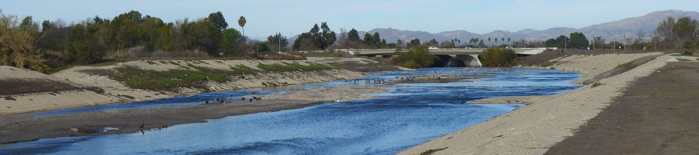
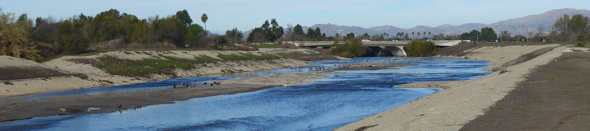

[2020-12-29] Hello World! Plus 2020 retrospective#
Hello world, welcome to my website! I am setting it up in the final days of 2020, and wanted to compile my “news” from the year that I would have posted here had I managed to put together a website sooner.
In April, I defended my dissertation proposal and officially passed into PhD candidacy! Wow it’s really hard to believe that was only 8 months ago, what a year.
I received a FAIR Cyber Training Fellowship, which has given me the opportunity to learn about how to use and produce FAIR (Findable, Accessible, Interoperable, and Reusable) data, code, and science. Thanks to the FACT team at Purdue and the NSF for this opportunity.
This Fall, I developed and taught my first course: Python for Environmental Research. Despite the difficulties of remote teaching, this was a gratifying experience! You can find the lectures on GitHub as a collection of Jupyter Notebooks.
Our article “Managing Financial Risk Trade‐Offs for Hydropower Generation Using Snowpack‐Based Index Contracts” was published in Water Resources Research. This was my first 1st-author peer-reviewed publication, which was a thrill! The paper was also selected for an AGU Editor’s Highlight in EOS Magazine.
Our article “Can modern multi-objective evolutionary algorithms discover high-dimensional financial risk portfolio tradeoffs for snow-dominated water-energy systems?,” led by Rohini Gupta at Cornell University, was published in Advances in Water Resources.
Two other articles (one led by H.B. Zeff at UNC, the other by Keyvan Malek at Cornell) are currently under review, and I expect to submit another paper of my own for review in the next couple of weeks. So hopefully more good news to come!
Of course, 2020 has been an inconceivably strange and difficult and exhausting year for all of us, and I am incredibly grateful for all of my many privileges that have allowed me to continue to do meaningful work remotely while earning a steady paycheck. Looking forward to 2021!